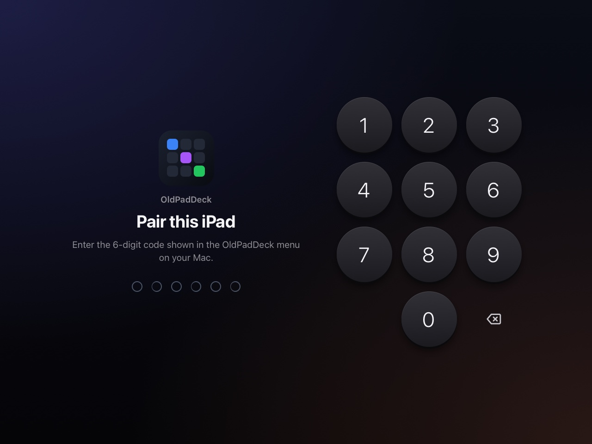
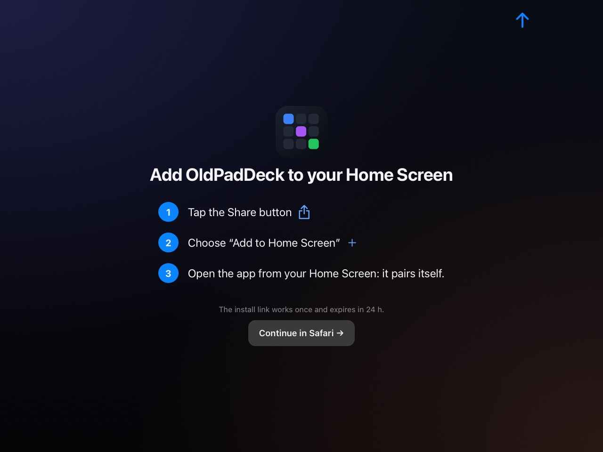

From drawer to desk in ten minutes.
Download the app, pair the iPad with a code, and put it on its stand. No account, no subscription, nothing to install on the iPad.
Requirements
That's all. Optional: brew install libimobiledevice if you want iPhone and iPad batteries on the deck.
Install on the Mac
- Download the latest
OldPadDeck.dmg.
Download for Mac - Open it and drag OldPadDeck onto the Applications folder.
- Launch OldPadDeck from Applications. An iPad icon appears in the menu bar.
Want it to start with your Mac? Turn on Launch at Login in the menu-bar menu.
Pair the iPad
- On the Mac, open Pair a Device…: click the iPad icon in the menu bar, or the app in the Dock. A QR code and a 6-digit PIN appear.
- On the iPad, scan the QR code with the Camera, or open the address shown in Safari and type the PIN.
- In Safari: Share → Add to Home Screen, then open OldPadDeck from the home screen. It pairs itself and runs full screen.


Permissions
macOS asks for each permission the first time a feature needs it. Permissions… in the menu-bar menu shows where you stand and opens the right page of System Settings.
| Permission | Used for |
|---|---|
| Accessibility | Keys, typing text, trackpad, window tiling, lock |
| Automation: System Events | Dark mode |
| Automation: Music, Spotify | Now playing, media controls |
| Calendars | Today's events |
| Reminders | Today's reminders |
| Bluetooth | AirPods battery levels |
| Screen Recording | Screenshots |
| System Audio Recording | Sending the Mac's sound to an AirPlay speaker |
| Local Network | Serving the interface to the iPad (macOS 15 and later) |
You only need the ones for the widgets you use. Everything else keeps working without them.
Make it a desk display
- Never sleep: iPad Settings → Display & Brightness → Auto-Lock → Never, and keep it on its charger.
- Lock it to the app: Settings → Accessibility → Guided Access, then triple-click the home button inside OldPadDeck.
- Pick your city: on the iPad, ⚙ → Weather. It's Paris until you change it.
- Stand it up: any tablet stand works. In landscape, the home button sits on the right.
Do Not Disturb
macOS has no public API for Focus, so OldPadDeck runs two Shortcuts you create once:
- In the Shortcuts app on the Mac, create a shortcut that turns on the Focus you want (for example Focus On) and one that turns it off (Focus Off).
- On the iPad, open ⚙ → Do Not Disturb and enter the two names.
- The Do Not Disturb key and the Pomodoro option now use them.
Update and uninstall
Update
Download the new version and drag it onto Applications to replace the old one. Your layout, paired iPads and stats are kept: they live outside the app, and a new default layout never replaces one you've customised.
Uninstall
Quit OldPadDeck from its menu and drag it from Applications to the Bin. To also remove your layout and paired devices, and make macOS forget its permissions, paste this in Terminal:
On the iPad, delete the home-screen icon.
Troubleshooting
The iPad can't reach the Mac
Both must be on the same network, and the Mac must allow Local Network access for OldPadDeck (System Settings → Privacy & Security, macOS 15 and later). Guest networks and some mesh routers keep devices apart. A VPN on the Mac can hide its local address.
The PIN is refused
The Pair window has to stay open on the Mac while you type it. After 3 minutes or 5 wrong tries, press New Code.
Keys, typing or the trackpad do nothing
Grant Accessibility to OldPadDeck in System Settings → Privacy & Security. If it's already on, switch it off and on again, or remove OldPadDeck from the list and add it back.
An AirPlay speaker is greyed out
OldPadDeck streams to AirPlay 1 speakers that accept unencrypted audio without a password. Speakers that only speak AirPlay 2 are listed but can't be used.
iPhone or iPad batteries don't show
Install libimobiledevice with Homebrew, plug the device into the Mac once over USB, trust the Mac, and tick Show this iPhone when on Wi-Fi in the Finder.
The screen goes dark
Set Auto-Lock to Never. OldPadDeck also keeps the iPad awake by itself once you tap Touch to start.